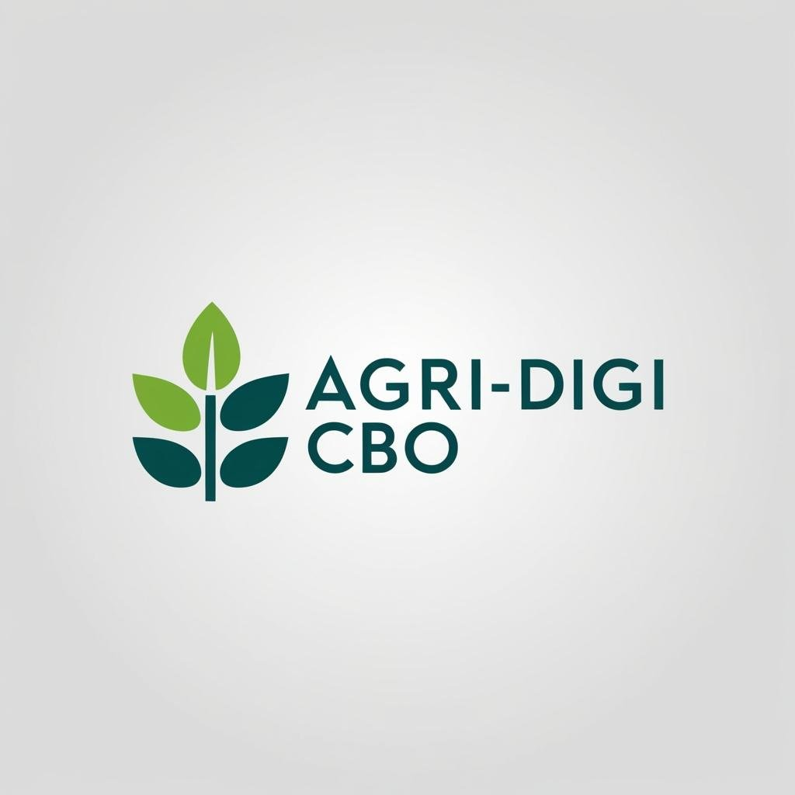

AgriDigiEmpowering farmers with cutting-edge technology to optimize crop yields, reduce costs, and build sustainable agricultural practices for the future.
Get StartedTransforming agriculture through innovative digital solutions that benefit farmers, communities, and the environment.
Maximize crop production through data-driven insights and precision farming techniques.
Lower operational expenses through smart resource management and automated systems.
Promote eco-friendly practices that protect the environment for future generations.
Provide farmers with the tools and knowledge to make informed decisions and thrive.